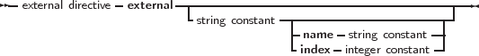

The external modifier can be used to declare a function that resides in an external object file. It allows to use the function in some code, and at linking time, the object file containing the implementation of the function or procedure must be linked in.
_________________________________________________________________________________________________________
External directive

___________________________________________________________________
It replaces, in effect, the function or procedure code block. As an example:
Remark: The parameters in the declaration of the external function should match exactly the ones in the declaration in the object file.
If the external modifier is followed by a string constant:
Then this tells the compiler that the function resides in library ’lname’. The compiler will then automatically link this library to the program.
The name that the function has in the library can also be specified:
This tells the compiler that the function resides in library ’lname’, but with name ’Fname’. The compiler will then automatically link this library to the program, and use the correct name for the function. Under Windows and os/2, the following form can also be used:
This tells the compiler that the function resides in library ’lname’, but with index Ind. The compiler will then automatically link this library to the program, and use the correct index for the function.
Finally, the external directive can be used to specify the external name of the function :
This tells the compiler that the function has the name ’Fname’. The correct library or object file (in this case myfunc.o) must still be linked, ensuring that the function ’Fname’ is indeed included in the linking stage.